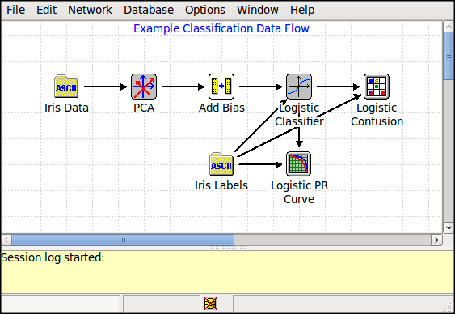

This project implements an interface for graphical development of machine learning data flow nextorks. A data flow network is a set of data processing nodes connected in an acyclic graph. Data (in the form of records) moves from source nodes, through processing nodes, to sink nodes. Visualization and debugging nodes provide tools for algorithm introspection. An example data flow network (within the GUI) is shown below.

The wxWidgets GUI toolkit needs to be installed for this project. See Linux Installation Instructions or Windows Installation Instructions for installation instructions.
- Warning
- This project is experimental. Not all features are fully implemented or supported.
An example data flow network for classification is provided in projects/gui/examples/exampleDataFlowNetwork.xml. You can open the network from the command-line with
bin/darwin projects/gui/examples/exampleDataFlowNetwork.xml
There are four basic operations that you can perform on a network (or subnetwork by selecting a subset of the nodes). The operations are:
- Evaluate Forwards: performs the operation of the node on any data available at the input and produces data at the output. Adaptive nodes, i.e., those with parameters that can be estimated needd to be initialized before they can operate on input data.
- Propagate Backwards: provides for future capability to propagate objective gradient information backwards through the network. Currently not implemented.
- Reset Parameters: initializes any parameters for the node.
- Estimate Parameters: uses data at the input of the node to learn parameters, e.g., logistic regression weights. Learning parameters invalidates the data at the output of the node (as well as all downstream data).
The Initialize (F5) option from the Network menu will iterate throught nodes in the network (in topological order), first estimating the parameters for the block and then evaluating forwards.
Nodes are divided into six functional groups:
- Source: nodes for providing data to the network, e.g., by reading files from disk. These nodes do not have any input ports.
- Sink: nodes for outputing data. These nodes do not have any output ports.
- Static: nodes which process data from intput to output. These nodes do not have any learnable parameters.
- Adaptive: nodes which process data from intput to output. these nodes have parameters which can be estimated from data.
- Visualization: nodes for providing data visualization and debugging.
- Custom: nodes implementing arbitrary functionality, e.g., via Matlab scripts.
- See also
- Applications and Project Descriptions